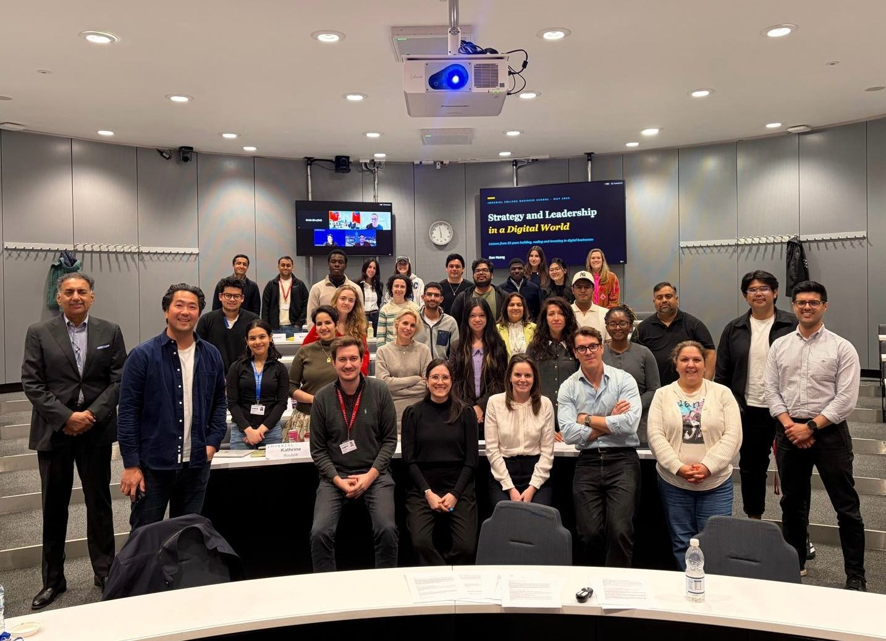
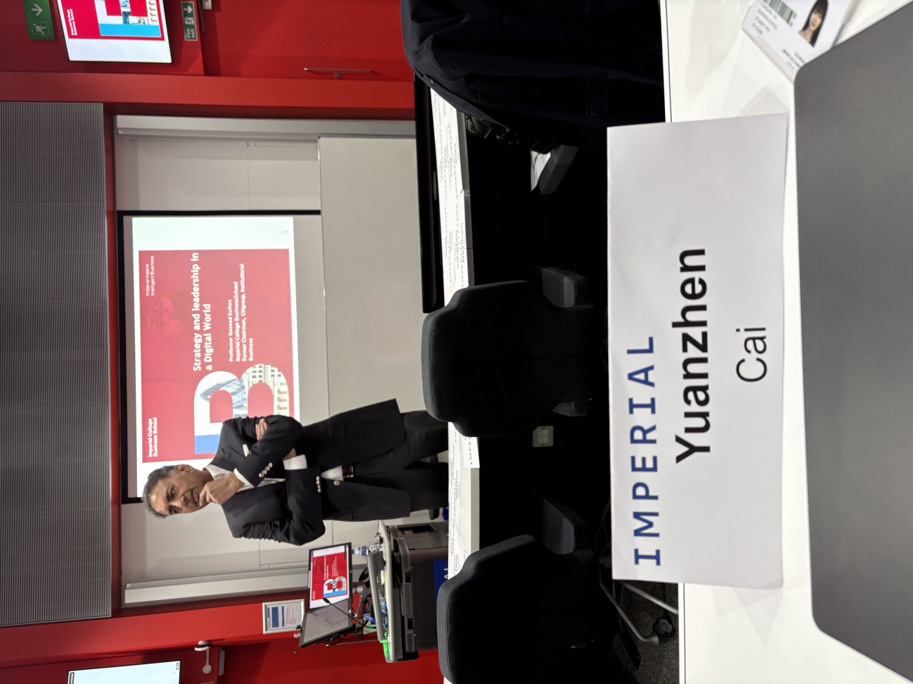
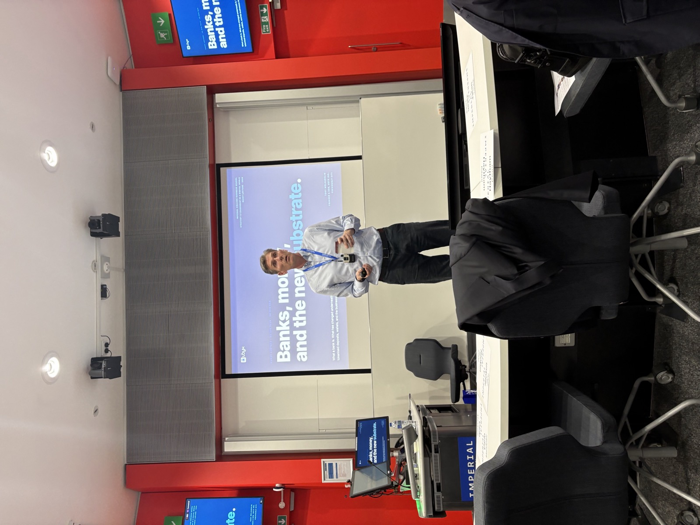
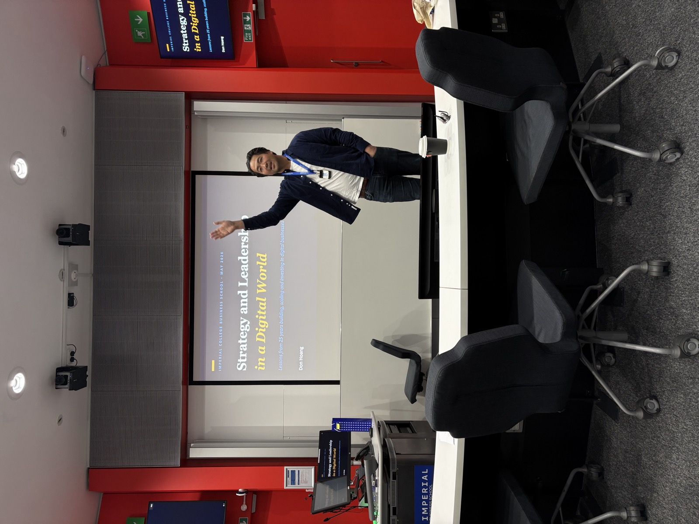
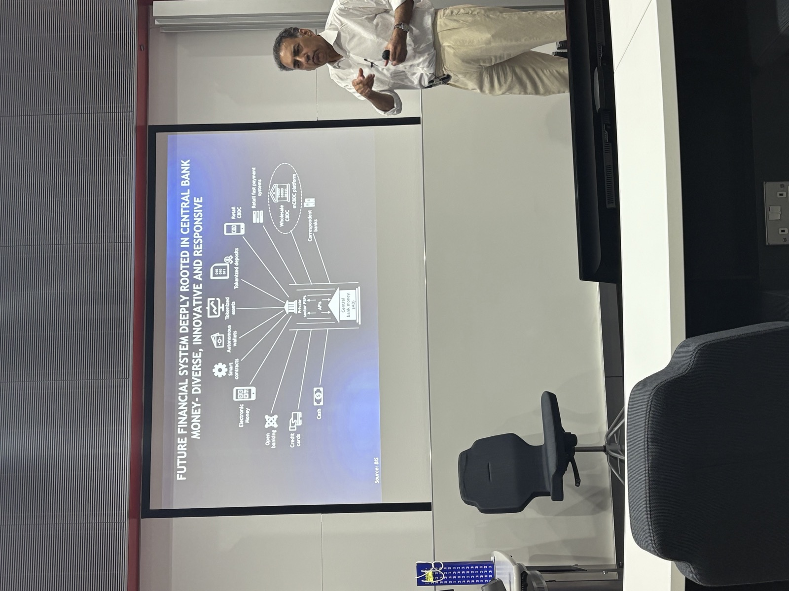

MBA Elective · Imperial College Business School · 2025
What five sessions on Strategy & Leadership in a Digital World taught me.
Key takeaways from an MBA elective with Naveed Sultan, former Chairman of Citi, on why digital transformation
is not a technology upgrade but a fundamental shift in how economies, companies, and leaders create value.
Across five sessions, five guest speakers brought the theory into the field, from the history of money and
banking to fintech strategy, McKinsey's transformation playbook, the AI-driven future of work, and the path to
the future financial system.
AuthorYuanzhen CaiProgrammeImperial College London · MBACourseStrategy & Leadership in a Digital WorldInstructorNaveed Sultan

The cohort, Strategy & Leadership in a Digital World, Imperial College Business School.
Digital transformation is not merely a technology upgrade. It is a fundamental shift in how economies, financial
systems, companies, and leaders create value. Across five sessions, that single idea was pressed from every angle:
the macro forces reshaping the economy, the case studies of incumbents who adapted and incumbents who did not, and
the kind of leadership the moment demands. At its core, the course argued for a new kind of leader, one grounded
in sharp environmental awareness, the ability to imagine bold possibilities, cross-disciplinary thinking, and a
relentless focus on delivering meaningful outcomes.
Your instructor
Naveed Sultan
Former Chairman of Citi and architect of Citi's Treasury and Trade Solutions transformation, the case study
that anchors Session 4. He brings the rare combination of having run a $12 billion global platform business
and the patience to teach the leadership principles that made it possible.
Session 1 · April 30The Fifth Industrial Revolution, and a new kind of leadership
We opened on the largest possible canvas. We are living through the Fifth Industrial Revolution, an era defined
by the convergence of physical, digital, and biological technologies, generating possibilities that were
unimaginable a decade ago. It brings disruption, yes, but more importantly it opens vast new space for innovative
business models, intensified competition, and entirely new sources of economic value.
Finance, unbundled
Nowhere is this disruption more visible than in financial services, historically one of the most friction-laden
sectors in the global economy. Banking is being unbundled by software, data, AI, mobile access, digital wallets,
blockchain, smart contracts, APIs, and cloud infrastructure. Traditional "pipeline" models, where firms produce
and customers passively consume, are giving way to network, platform, and ecosystem models. Competitive advantage
now lies less in owning assets and more in designing powerful digital platforms, building resilient operational
backbones, deploying data intelligently, and participating actively in broader ecosystems.
Takeaway01
Digital transformation is a leadership challenge, not a technical one. It demands environmental awareness, bold imagination, cross-disciplinary thinking, and a focus on outcomes.
Takeaway02
Advantage shifts from owning assets to orchestrating platforms. Networks, data, and ecosystem participation now create value where balance sheets once did.
Takeaway03
AI is transformative, and ethically loaded. Leaders must pair technological literacy with critical thinking, curiosity, empathy, and judgment, and demand that developers disclose model risks and limitations.
Takeaway04
Digital policy is a third policy lever, alongside monetary and fiscal, broadening the formal economy, advancing inclusion, and governing CBDCs, digital identity, open banking, and tokenisation.
The point about AI was brought to life in the room: when we compared our own solution to the UK social housing
crisis with one generated by Claude AI, ours proved demonstrably more holistic, human-centred, and contextually
nuanced, a reminder that judgment, not just generation, is where leaders earn their place.

Session 1, setting the frame for the digital economy.
Guest Lecture
Money, banking, and the shifting substrate
Tony McLaughlin, CEO of Ubyx.
Tony's central argument: the core function of banking has not changed. Banks still create credit by managing
the mismatch between short-term liabilities and long-term, uncertain assets. What has changed is the underlying
infrastructure, the "substrate." Records have migrated from paper ledgers to mainframe databases, and are now
moving toward cloud platforms and public blockchain infrastructure.
Crucially, blockchains should be understood not primarily as cryptocurrencies or payment rails, but as shared
"who-owns-what" machines. Banks may well remain central, but the customer interface is shifting, from
traditional accounts toward wallets, stablecoins, tokenised deposits, programmable money, and agent-based commerce.

The Session 1 guest speaker addressing the cohort.
For Laerdal Medical
Digital change is a strategic and leadership challenge, not a technical one, and the platform lesson is the
one I'd flag for us. Laerdal still sells largely as products: manikins, trainers, devices. The
session's argument is that durable advantage is migrating to platforms, data, and ecosystems. We already have
the pieces (SimCapture, LLEAP, scenario libraries, performance data), and the opportunity is to connect them
into a single learning ecosystem where the data we capture (CPR quality, scenario outcomes) becomes the
differentiator, not the hardware alone.
And as we put more AI into skills feedback and debriefing, we should hold our own AI suppliers to the standard
the session set: insist on clear disclosure of what the models can and cannot reliably judge in a
clinical-education setting, so educators keep informed judgment in the loop.
Session 2 · May 7The Washington Post, and the discipline of product
The Washington Post case is a study in the evolution of journalism, driven by a complex interplay of technology,
economics, regulation, consumer behaviour, competition, and politics. The Post faces a defining strategic
inflection point: to survive and grow, it must evolve from a legacy print institution into a digital,
product-driven media and technology company. Print readership is shrinking, advertising revenue eroding, and
competition from social platforms intensifying. In response, the Post made substantial bets on digital
subscriptions, mobile-first products, data capabilities, agile teams, and homegrown technologies such as Arc XP
and Zeus.
Its most critical challenge is winning over younger audiences, particularly Gen Z, who encounter news through
social media rather than seeking out traditional brands. The path forward requires holding two things in balance:
maintaining a reputation for rigorous, trustworthy journalism while aggressively modernising how it builds
products, reaches audiences, and monetises content.
Broader lessons
Lesson01
Solutions must fit the organisation's strategy, resources, and threats. The right approach depends on where the company stands in its environment at any given moment.
Lesson02
Decisions are shaped by the human element, departmental biases between editorial, engineering, and marketing. Strong leaders navigate these internal tensions.
Lesson03
SaaS principles translate broadly, regardless of industry or business model. Product-management thinking is no longer confined to tech.
Lesson04
Capturing attention is now a shared goal across business models, but the ethical boundaries of influencing user behaviour, and the responsibility for misinformation, remain unresolved.
We also worked three critical-thinking exercises grounded in real dilemmas: a dairy company's supply chain, a
hospital group's sustainability strategy under investor pressure, and an SME financing gap. In each case, the
class's solutions were more thoughtful and impactful than conventional approaches, underscoring the value of
ingenuity and critical analysis applied to complex problems.
Guest Lecture
Three waves: cloud, mobile, and AI
Don Hoang, former executive at Uber and Revolut, and venture capitalist.
Don identified the common thread: the most successful digital businesses are built by recognising everyday
friction, reimagining the experience from the ground up, and aligning technology with a scalable business
model. Uber didn't simply digitise taxi-hailing, it wove together GPS, smartphones, payments, and marketplace
dynamics to eliminate friction in urban transport. Revolut started with a narrow pain point in foreign exchange
and expanded into a full financial superapp.
In both cases the consumer-facing product is only the surface. The deeper advantage lies in operational
discipline, regulatory navigation, shipping speed, and accumulated trust: the value-creation cycle of
observation, imagination, connecting the dots, and creating value. The same logic now applies to AI, but
faster: sustainable value will flow not from models alone, but from combining them with proprietary context,
deep workflow integration, distribution reach, and hard-won trust.

Don Hoang presenting in Session 2.
For Laerdal Medical
Two practical moves. First, product-management discipline shouldn't live only in R&D: the SaaS playbook of
continuous iteration, usage data, and tight feedback loops applies to how we build and sell across the whole
company. Second, our future customers are Gen Z nurses and clinicians who learn on their phones and through
social channels. The Washington Post's challenge is ours: keep the clinical credibility and AHA-aligned trust
that is our brand, while modernising how we reach, onboard, and engage a younger healthcare workforce.
Don Hoang's friction test makes a good weekly question for us: what do clinical educators currently put up with
that they shouldn't have to? The friction we remove from their workflow, not the next feature, is where the
next product lives.
Session 3 · May 14Majid Al Futtaim, and why transformations fail
The session grounded transformation in the Majid Al Futtaim (MAF) case, a Dubai-based holding company operating
malls, retail, and leisure across the MENA region. Digital transformation was defined as the integration of
technology into all aspects of a business, creating fundamental changes in operating processes and in the value
proposition to customers, with advanced analytics treated as a core component: data increasingly functions as a
strategic asset.
MAF organised its transformation around four building blocks: change management; data and technology; people
capability; and decision support and use cases. A particularly important innovation was the distinction between
a central Centre of Excellence (setting direction, standards, data strategy, shared platforms)
and the operating companies (implementing standards, owning local use cases, driving adoption).
The three-year plan moved from building foundations, to shifting mindsets and scaling, to autonomy and measurable
business impact.
Guest Lecture
Why digital transformations fail, and what separates the ones that succeed
Mary Meaney, former Senior Partner at McKinsey & Company; Board Member of the Imperial College Council and Imperial College Business School; Non-Executive Director, Tilques.
Her central argument: digital transformation is not simply a technology challenge. It requires a clear business
case, new operating models, data and analytics capabilities, cultural change, investment in talent, leadership
alignment, and the organisational ability to scale new ways of working. Disruption intensifies
winner-takes-all dynamics. Digital leaders consistently outperform peers on revenue growth and total returns.
Yet 70% of traditional change programmes fail, and digital transformations are even harder. Meaney identified
four recurring failure modes (poor resource allocation, stunted delivery and scaling, organisational conflict,
and a failure to create value) and a five-stage journey: Aspire, Assess, Architect, Act, Advance.
People change behaviour when four conditions are met: leaders and peers model it, employees believe in it, they
have the skills to act, and processes and incentives reinforce it.
Disruption in practice: Gillette, Kodak, and Apple
Case01
Gillette vs. Dollar Shave Club & Harry's. In a commoditised category, customers may value price, convenience, and simplicity over incremental technical improvement. R&D and brand advertising are not always the right defence; patents slow rivals but don't fix a business-model problem.
Case02
Kodak. Invented digital photography in 1975 but refused to develop it, fearing cannibalisation of film. It created the future but was paralysed by its past, bankrupt by 2012.
Case03
Apple & the iPod. Apple let the iPhone and streaming erode the iPod's relevance, cannibalising its own product before competitors could. Sometimes you need the courage to disrupt yourself.
For Laerdal Medical
MAF's Centre-of-Excellence model maps cleanly onto us: a central data and analytics function setting standards,
governance, and shared platforms, while Laerdal Medical, Global Health, and the regions own their local use
cases and adoption. Meaney's "change story" matters just as much. Any transformation here needs a compelling,
repeatable narrative that leaders and peers visibly model, not just a roadmap.
And Kodak is the cautionary tale I'd put in front of leadership. We cannot let a profitable hardware business
quietly veto the software, data, and subscription models the market is moving toward. Better we cannibalise
ourselves, on our own terms and timeline, as Apple did with the iPod, than wait for a digital-only entrant to
do it for us.
Session 4 · May 21Klöckner, Citi TTS, and inventing the future
Klöckner & Co: transformation in a traditional industry
Klöckner demonstrates that digital transformation must be a CEO-level priority, not a delegated technology
initiative. Gisbert Rühl personally championed the effort, convinced that companies must disrupt their own
industries before others do. Rather than wait for challengers, Klöckner launched two initiatives: kloeckner.i,
an internal transformation unit, and XOM Materials, an independent B2B platform aiming to become the "Amazon of
the steel trade." Situating the innovation unit in Berlin created enough distance for a startup culture while
retaining access to industry expertise. Rühl promoted hierarchy-free communication, used Yammer and
#AskYourCEO, and gave job-security assurances to encourage participation in digital training. Substance must
take precedence over symbolism, and financial returns may lag investment.
Citigroup TTS: from products to platform
Citi's Treasury and Trade Solutions offers a compelling case in business-model transformation. After the
financial crisis, Citi needed businesses that were resilient, capital-efficient, and globally relevant. TTS had
strong foundations: global reach, client trust, transaction flows, liquidity relevance. Its strategic insight
was to identify its "unequal moment": a convergence of digitisation, globalisation, urbanisation, regulation,
liquidity demand, and platform economics. The vision became "the Financial Platform for Global Commerce"
, shifting from selling discrete products to enabling global flows through connectivity, data, APIs, partnerships,
and network effects.
Transformation demanded the ability to inspire 30,000 employees, built on trust, empathy, credibility,
collaboration, optimism, diversity, humility, and resolve.
Result01
Over $12B in revenue and $4B in net income. TTS became one of Citi's most valuable businesses.
Result02
26 consecutive quarters of revenue growth, with 45% operating efficiency and ~40% return on capital.
Lesson03
Digital transformation succeeds when it drives business-model transformation, not when treated as a technology upgrade. Find the structural advantages, connect them to long-term trends, and align culture, operating model, technology, and investment behind a clear vision.
BlackBerry vs. iPhone
BlackBerry once held ~50% of the US smartphone market. Its decline came from resistance to touchscreens, an
overly narrow corporate focus, a weak app ecosystem, and a dismissal of the iPhone as a credible threat. Apple
treated the iPhone as a platform rather than a device; the App Store created a powerful ecosystem. The core
lesson, a textbook Innovator's Dilemma, is that BlackBerry protected its past, while Apple invented the future.
Guest Lecture
Why the future of work needs pro-human leaders
Robert Garlick, former Head of Innovation, Technology & the Future of Work at Citi Global Insights.
Garlick argues AI is not simply a productivity tool but a force that could reshape employment, wages,
inequality, and capitalism itself. A key concern is a K-shaped future, in which some
countries, companies, and workers benefit enormously while others are left behind, with risks of wage
pressure, worker backlash, asset bubbles, and an "economic singularity."
The proposed response is pro-human leadership: design AI adoption around better jobs, not
efficiency alone. Deploy AI to reduce drudgery, improve job quality, and create new roles and revenue streams,
while investing in upskilling, apprenticeships, safety nets, and giving workers a genuine voice. AI leadership
cannot be purely technical or financial; it must be shaped around human dignity, shared prosperity, and worker
agency.
For Laerdal Medical
Citi TTS is the most directly transferable case. It reframed a product business as "the platform for global
commerce." Our equivalent ambition could be to become the platform for healthcare education and patient
safety: recurring relationships, APIs, and partnerships with network effects, rather than one-off
device sales. Klöckner adds that this has to be CEO-sponsored, and may need a protected, startup-paced unit to
incubate; BlackBerry warns against dismissing VR/AR and digital-only training entrants as not-serious.
Garlick's pro-human framing fits Laerdal almost perfectly, given our mission of helping save lives. We should
deploy AI to take drudgery out of educators' work (debrief notes, documentation, scoring) so they spend more
time on the human craft of teaching, not less. AI adoption here should be measured by better jobs and better
learning, not headcount efficiency.
Session 5 · May 28Ping An, the future of money, and leading from the front
Ping An: technology as the operating system of transformation
Ping An Technology was not simply an internal IT department. It became the central strategic engine that helped
Ping An Group transform from a traditional insurer into a multi-sector digital ecosystem player across finance,
healthcare, automobile, real estate, and smart city. It gave the Group a shared digital backbone: data, AI, cloud,
blockchain, facial and voice recognition, and incubation capability. The vivid metaphor: Ping An operates like a
digitally enabled "organism": AI as the brain, cloud as the body, blockchain as the connective network.
The ecosystem model rests on the idea that customers don't only enter through insurance or banking. They may
first arrive through healthcare advice (platforms such as Good Doctor), auto services, or smart-city interactions
, and once trust is built, Ping An can cross-sell financial products. The flywheel is powerful: in 2019, 74
million customers held contracts with more than one Ping An company. Ping An built much in-house because generic
tools weren't accurate enough for Asian faces or Chinese dialects, then reused those capabilities across the
Group and commercialised some externally via OneConnect.
Takeaway01
Technology became a strategic platform, not a support function. One investment could serve insurance, banking, health, auto, housing, and city services.
Takeaway02
Move upstream in the customer journey. Build platforms first, attract users, monetise later through financial-services relationships.
Takeaway03
Leadership enabled it: long-term investment (1% of revenue in R&D), aggressive goals, openness to outside talent, and overcoming "not invented here" thinking.
Guest Lecture
Bringing coherence to chaos: the path to the future financial system
A guest lecture on how the global financial system is evolving in a digital world.
Finance is entering a new frontier shaped by the interaction between society, the economy, and the financial
system. Money remains fundamentally a social convention, a unit of account, medium of exchange, and store of
value, whose strength depends on trust, acceptance, and network effects. The rise of cryptocurrencies has
created both opportunity and fragmentation, raising regulatory concerns around fraud, AML, taxation, and
systemic risk. Stablecoins can make global transactions faster and cheaper, but still depend on trusted
custodians, audits, and oversight. Tokenisation of real-world assets could improve liquidity, access, and
transparency, though interoperability, cyber risk, and custody remain challenges.
The future financial system is likely to be hybrid: central bank money at the core, combined with the
programmability, composability, and efficiency of digital technologies.
CBDCs and digital assets are not just technology projects but part of a broader digital-policy agenda. Successful
CBDC adoption would require clear use cases, simple onboarding, strong user experience, merchant integration,
trust, incentives, and partnerships with existing payment infrastructure. Regulation of digital assets has
accelerated globally between 2019 and 2025. The future of finance will depend on balancing innovation with
trust, safety, regulation, and public accountability.

Session 5, closing the module.
Leading from the front to change culture
The module closed on leadership, principles that are not just universal but transformative. At the heart of
great leadership lie four pillars: consistency, fairness, emotional intelligence, and collective ownership. These
are not abstract ideals; they are daily choices that define who you are as a leader and endure long after you
have left the stage.
Trust
Be dependable and transparent, so people don't second-guess your intentions.
Empathy
Challenge problems directly while respecting people, tough on issues, not on individuals.
Credibility
Align words with actions; what you say and what you do should not diverge.
Collaboration
Create a culture of shared success by giving credit rather than assigning blame.
Optimism
Maintain belief in progress and help others feel that tomorrow can be better.
Diversity
Value difference in all its forms and recognise the strength of varied perspectives.
Equality
Treat everyone fairly and consistently, without favouritism.
Collective ownership
Model the behaviours that build a healthier, more inclusive, accountable culture.
For Laerdal Medical
Ping An's flywheel is worth studying: enter the customer journey upstream and build trust before
monetising, then reuse the same platform capabilities across every business line instead of rebuilding them.
For us that means meeting learners early (nursing students, community health workers) and letting one shared
backbone of content, data, and analytics serve Laerdal Medical, Global Health, and the regions alike, rather
than each product reinventing its own.
On leadership, the closing principles read like a culture brief for Laerdal: trust, empathy, credibility,
collaboration, optimism, diversity, and equality are the behaviours that decide whether any of the strategy
above actually happens. When you truly embrace them, you become more than a leader, you become a force for
good, and the people who walk alongside you are better for it, professionally and personally.
Until next time
Five sessions, one cohort, and a shared conviction that leadership is what turns technology into value.
Digital change is a leadership challenge, never a narrow technical one.
The future economy will be shaped by platforms, data, AI, digital money, interoperable infrastructure, and
ecosystem-driven value creation. Success will belong to those leaders, institutions, and governments that move
decisively beyond legacy structures, build the right capabilities, and design systems that are inclusive,
resilient, and built to adapt in a world that will not stand still.
Happy to share slides, case readings, or compare notes on how any of this applies to a current project.